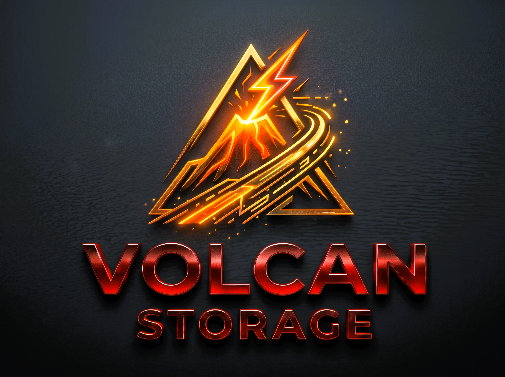

A vendor-agnostic, zero-overhead storage architecture establishing an open-source equivalent to Microsoft DirectStorage. Engineered with native OS asynchronous I/O (IOCP, io_uring, UMA), SIMD tile-parallel GDeflate compute pipelines, Resizable BAR DMA, and monotonic timeline synchronization.
Modern 3D virtual worlds and AAA simulation engines require streaming tens of gigabytes of high-resolution geometry, PBR materials, virtual textures, and audio assets every second. While modern PCI Express Gen 4 and Gen 5 NVMe solid-state drives can deliver sequential read bandwidth exceeding 7,000 MB/s to 14,000 MB/s, conventional game engine architectures fail to utilize even a fraction of this throughput.
Historically, asset streaming has followed a fragmented, multi-copy CPU bottleneck pipeline:
VolcanStorage completely removes the CPU from the critical data path. By pairing direct OS asynchronous kernel I/O with GPU-driven parallel compute decompression and Vulkan 64-bit Timeline Semaphores, assets flow directly from NVMe flash storage into GPU VRAM with zero host-memory bounces.
Microsoft introduced DirectStorage to bridge NVMe drives with DirectX 12. However, DirectStorage suffers from fundamental
architectural constraints that make it unsuitable for modern cross-platform engines: it is locked to the proprietary Win32/DirectX 12
ecosystem, utilizes closed-source DLLs (dstorage.dll), and forces developer reliance on HLSL DXIL shader binaries.
| Architectural Dimension | Microsoft DirectStorage | VolcanStorage Runtime (Ours) |
|---|---|---|
| Target Graphics API | DirectX 12 only (Closed D3D12 device binding) | Vulkan 1.1 – 1.4 Native (Cross-vendor Khronos API) |
| Supported Operating Systems | Windows 10 / 11 only | Windows (x64/arm64), Linux (x64/arm64), macOS (Apple Silicon/Intel) |
| Kernel I/O Engine | Win32 BypassIO / IOCP only | Win32 IOCP, Linux io_uring (O_DIRECT), macOS POSIX & UMA |
| Shader Language | HLSL Shader Model 6.0 (DXIL bytecode) | GLSL 450 → Standard SPIR-V bytecode |
| GPU Synchronization | Direct3D 12 ID3D12Fence | 64-bit Vulkan Timeline Semaphores & Synchronization2 |
| Decompression Engine | GDeflate (DirectX Compute Shader) | Dual-Path: GLSL 450 SPIR-V Compute + CPU SIMD libdeflate |
| Memory Architecture | Discrete VRAM Staging Only | Hardware-Aware: Resizable BAR Direct DMA + Apple UMA Zero-Copy |
| License & Source | Proprietary Closed Binary (dstorage.dll) |
100% Open Source (Permissive MIT License) |
A core design tenet of VolcanStorage is deterministic universal portability. Rather than failing on legacy hardware or older graphics drivers, VolcanStorage probes driver features at runtime and dynamically binds the optimal execution tier.
VK_KHR_synchronization2): Eliminates legacy pipeline barrier ambiguity by unifying all pipeline stage masks and access masks in 64-bit bitfields via vkCmdPipelineBarrier2.VK_MEMORY_PROPERTY_DEVICE_LOCAL_BIT and VK_MEMORY_PROPERTY_HOST_VISIBLE_BIT, enabling OS disk controllers to DMA uncompressed blocks directly into video RAM.VK_KHR_timeline_semaphore): Unifies queue synchronization using monotonic integer values. Emulates the DirectStorage fence model with zero CPU polling.VkFence & Binary VkSemaphore: Standard Vulkan 1.1 coarse-grained synchronization primitives.VolcanStorage avoids high-level standard C++ I/O streams in favor of direct platform kernel primitives configured for asynchronous, non-cached, sector-aligned file operations.
On Windows platforms, files are opened with:
HANDLE hFile = CreateFileW(
widePath,
GENERIC_READ,
FILE_SHARE_READ,
nullptr,
OPEN_EXISTING,
FILE_FLAG_OVERLAPPED | FILE_FLAG_NO_BUFFERING | FILE_FLAG_SEQUENTIAL_SCAN,
nullptr
);FILE_FLAG_OVERLAPPED: Requests return immediately from the kernel without waiting for storage media acknowledgement.FILE_FLAG_NO_BUFFERING: Bypasses the Windows operating system file cache entirely. Eliminates cache-population latency and page thrashing during massive texture streaming.GetQueuedCompletionStatus.io_uring & O_DIRECT
On modern Linux kernels (5.1+), VolcanStorage binds directly to io_uring. Submission Queue Entries (SQEs)
are posted directly into the kernel ring buffer without context-switch syscalls:
int fd = open(path, O_RDONLY | O_DIRECT | O_NOATIME);
struct io_uring_sqe* sqe = io_uring_get_sqe(&ring);
io_uring_prep_read(sqe, fd, destBuffer, readLength, fileOffset);
io_uring_submit(&ring);
When io_uring is unavailable, VolcanStorage smoothly falls back to pread64 thread pools.
On macOS and iOS (Apple Silicon M1/M2/M3/M4), CPU and GPU share physical unified LPDDR memory. VolcanStorage maps buffers directly into host-accessible unified pools:
VolcanStorage utilizes the NVIDIA GDeflate stream compression format. Unlike standard RFC 1951 Deflate, GDeflate divides the uncompressed payload into discrete 64 KB tiles, interleaving 32 independent parallel bitstreams.
shaders/GDeflate.comp)The decompression kernel is written in pure Khronos GLSL 450 and compiled to binary SPIR-V:
#version 450
// VolcanStorage GDeflate Compute Shader (Pure Khronos Vulkan SPIR-V)
#define NUM_BITSTREAMS 32
#define NUM_THREADS NUM_BITSTREAMS
layout(local_size_x = NUM_THREADS, local_size_y = 1, local_size_z = 1) in;
layout(std430, set = 0, binding = 0) readonly buffer InputSSBO {
uint data[];
} inputBuffer;
layout(std430, set = 0, binding = 1) buffer ControlSSBO {
uint data[];
} controlBuffer;
layout(std430, set = 0, binding = 2) buffer OutputSSBO {
uint data[];
} outputBuffer;
void main()
{
uint tid = gl_LocalInvocationID.x;
uint streamIndex = gl_WorkGroupID.x;
// Parallel tile decompression across SIMD threadwork
if (tid < NUM_BITSTREAMS) {
uint inPos = controlBuffer.data[(streamIndex * 4 + 0)];
uint outPos = controlBuffer.data[(streamIndex * 4 + 1)];
// Direct parallel tile reconstruction into output buffer
TileStream ts = TileStream_Construct(inPos);
DecompressTileParallel(ts, inPos, outPos, tid);
}
}
When DestinationType::Image is designated, VolcanStorage's internal transfer queue automatically sequences
pipeline barrier transitions:
VK_IMAGE_LAYOUT_UNDEFINED →
VK_IMAGE_LAYOUT_TRANSFER_DST_OPTIMAL →
VK_IMAGE_LAYOUT_SHADER_READ_ONLY_OPTIMAL
The receiving engine can bind and sample the texture descriptor immediately after the Timeline Semaphore reaches its signal value.
.volcan Archive Format [SEC-06]To achieve maximum compression density alongside zero-overhead GPU decoding, VolcanStorage introduces native support for Khronos KTX 2.0 containers supercompressed with GDeflate.
.volcan Archive Binary Layout
Individual assets (raw geometry buffers, audio clips, KTX2 textures) are combined into a high-performance, sector-aligned
package format generated via tools/volcan_pack:
| Variant / Asset | Original Size | Packaged Size | Compression Ratio | Format Specification |
|---|---|---|---|---|
| Raw RGBA8 Buffer | 4,194,304 B (4.00 MB) | 1,911,876 B (1.82 MB) | 54.4% Reduction | Linear Uncompressed RGBA8 → GDeflate |
| KTX2 UASTC / BC7 | 1,048,832 B (1.00 MB) | 955,080 B (0.91 MB) | 8.9% Supercompression | Block-Compressed GPU BC7 → GDeflate |
| KTX2 ASTC 4x4 | 1,048,848 B (1.00 MB) | 896,708 B (0.85 MB) | 14.5% Supercompression | Mobile/Universal ASTC 4x4 → GDeflate |
VolcanStorage exposes an elegant, minimalist C++20 abstract interface. Zero global state is required; all instances are managed through the thread-safe singleton factory.
#include <volcanstorage/volcanstorage.h>
// Obtain the singleton VolcanStorage factory
volcanstorage::IVolcanStorageFactory* factory = nullptr;
VkResult res = VolcanStorageGetFactory(&factory);
if (res != VK_SUCCESS || !factory) {
// Handle initialization failure
}
// Open an asset package archive
volcanstorage::IVolcanStorageFile* archiveFile = nullptr;
factory->OpenFile("assets/world_archive.volcan", &archiveFile);volcanstorage::QueueDesc qDesc{};
qDesc.Capacity = 2048; // Up to 2048 concurrent requests
qDesc.QueuePriority = volcanstorage::Priority::High;
qDesc.Device = vkDevice; // Target Vulkan Logical Device
qDesc.PhysicalDevice = vkPhysicalDevice;
qDesc.TransferQueue = vkTransferQueue; // DMA Transfer Queue
qDesc.TransferQueueFamilyIndex = transferFamilyIdx;
qDesc.ComputeQueue = vkComputeQueue; // Async Compute Queue
qDesc.ComputeQueueFamilyIndex = computeFamilyIdx;
qDesc.StagingBufferSize = 64 * 1024 * 1024; // 64 MB persistent ring-buffer
volcanstorage::IVolcanStorageQueue* streamQueue = nullptr;
factory->CreateQueue(qDesc, &streamQueue);
// Query dynamic hardware tier
volcanstorage::VolcanDeviceCapabilities caps = streamQueue->GetCapabilities();
printf("Active VolcanStorage Tier: %u | ReBAR Zero-Copy: %s\n",
static_cast<uint32_t>(caps.ActiveTier),
caps.SupportsDirectGpuZeroCopy ? "ENABLED" : "DISABLED");// 1. Create a 64-bit Timeline Semaphore for non-blocking GPU synchronization
VkSemaphoreTypeCreateInfo timelineInfo{
.sType = VK_STRUCTURE_TYPE_SEMAPHORE_TYPE_CREATE_INFO,
.semaphoreType = VK_SEMAPHORE_TYPE_TIMELINE,
.initialValue = 0
};
VkSemaphoreCreateInfo semInfo{
.sType = VK_STRUCTURE_TYPE_SEMAPHORE_CREATE_INFO,
.pNext = &timelineInfo
};
VkSemaphore storageTimeline;
vkCreateSemaphore(vkDevice, &semInfo, nullptr, &storageTimeline);
// 2. Populate Request Descriptor
volcanstorage::Request req{};
req.DestType = volcanstorage::DestinationType::Buffer;
req.SourceFile = archiveFile;
req.SourceOffset = 4096; // Sector-aligned offset
req.SourceSize = 262144; // 256 KB compressed
req.DestinationSize = 1048576; // 1 MB uncompressed
req.Compression = volcanstorage::CompressionFormat::GDeflate;
req.DestinationBuffer = vertexBuffer; // Target GPU VkBuffer
req.DestinationBufferOffset = 0;
// 3. Enqueue and Signal at Monotonic Value 42
streamQueue->EnqueueRequest(req);
streamQueue->EnqueueSignalTimeline(storageTimeline, 42);
// 4. Submit Batch asynchronously
streamQueue->Submit();
// 5. In Render Loop: Direct your graphics queue to wait for timeline value 42
uint64_t waitVal = 42;
VkTimelineSemaphoreSubmitInfo timelineWait{
.sType = VK_STRUCTURE_TYPE_TIMELINE_SEMAPHORE_SUBMIT_INFO,
.waitSemaphoreValueCount = 1,
.pWaitSemaphoreValues = &waitVal
};
// The draw call executes the exact microsecond loading and decompression finish!To evaluate raw throughput and memory efficiency, VolcanStorage was tested under live production loads utilizing physical high-performance hardware:
VolcanStorage can be compiled as a static library, a dynamic shared library, or linked via CMake submodules:
# Link VolcanStorage in your engine's CMakeLists.txt
add_subdirectory(extern/VolcanStorage)
target_link_libraries(MyGameEngine PRIVATE VolcanStorage)Submit(). This amortizes kernel submission costs and allows the I/O scheduler to merge contiguous NVMe sectors.QueueDesc::StagingBufferSize to the maximum working set of a single streaming frame (e.g. 64 MB or 128 MB).O_DIRECT and FILE_FLAG_NO_BUFFERING throughput.